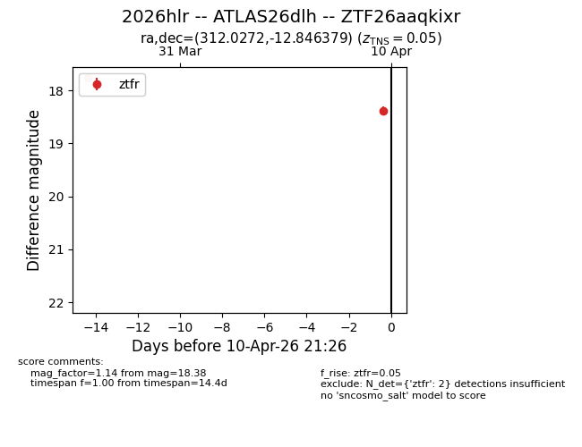
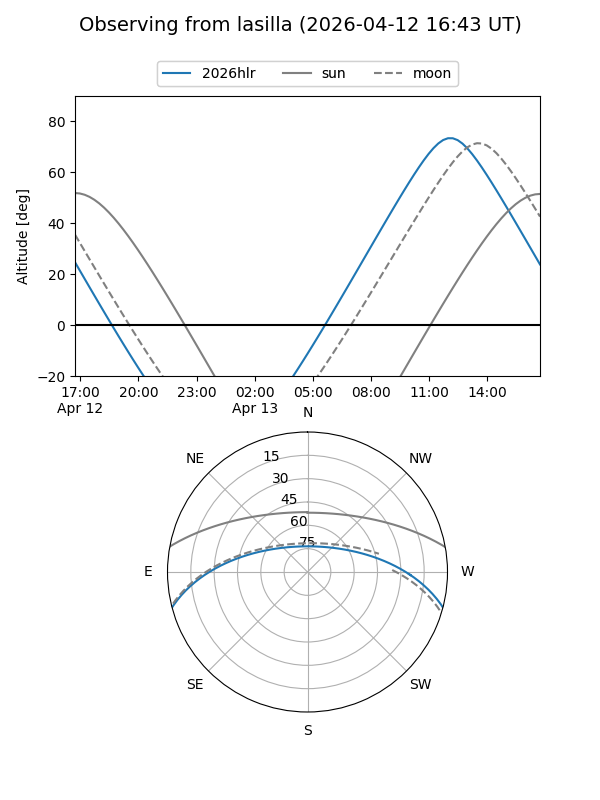
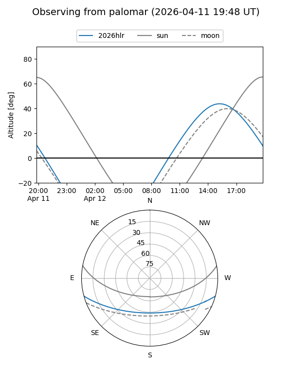
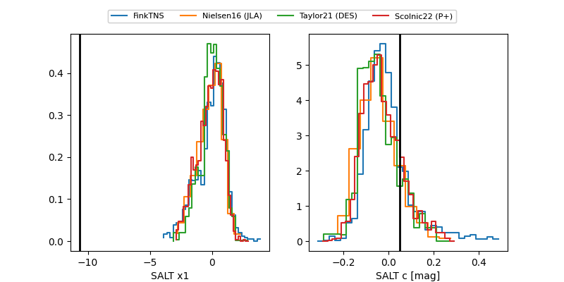

2026hlr
Target 2026hlr at 2026-04-10 21:34
Aliases and brokers:
FINK: link
Lasair: link
ALeRCE: link
TNS: link
YSE: link
alt names
ZTF26aaqkixr (ztf,fink_ztf)
2026hlr (tns,yse)
ATLAS26dlh (atlas)
Coordinates:
equatorial (ra, dec) = 312.0272,-12.84638
equatorial (HMS+DMS) = 20:48:06.54,-12:50:46.96
galactic (l, b) = (34.1964,-31.61962)
Flags:
confirmed ia
Photometry:
last ztfr=18.38
2 ztfr detections
Lightcurve

Visibility


Additional plots
